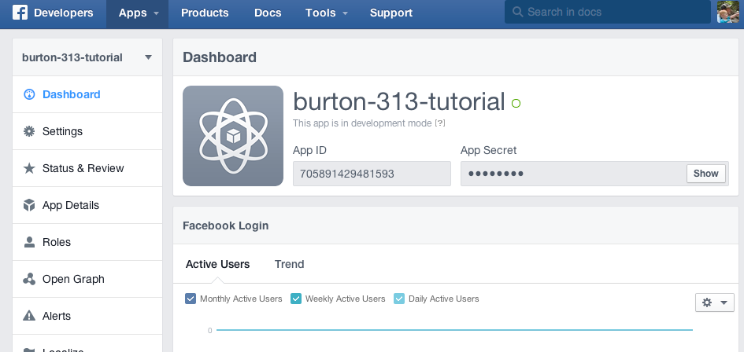
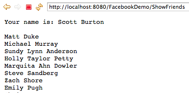
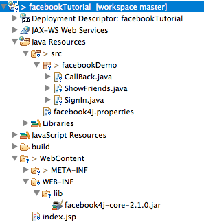

Authentication with the Facebook API
Objective
Demonstrate the basics of connecting to the Facebook API using OAuth 2 authentication.
To do this, we will develop a simple web application that enables a user to sign in with their Facebook credentials, and then displays a list of their friends. We will be using the facebook4j library to facilitate this.
Note: It appears that the Facebook API has changed slightly since this example was written, and newly created apps may not have access to the list of friends anymore. The authentication process is still the same, but in the end where this example shows how to display the list of friends, your new app may not be able to. Instead, you could just display the user's own name, or other data that is still available, to verify that your application is working.
Understanding the basics of the Oauth 2.0 Handshaking process.
In order to access Facebook to the get friends of a particular user, we need to kinds of access. First, our application needs to authenticate with Facebook, and second, the user also needs to authenticate.
When we create a new application at Facebook, we are given access credentials, which could be thought of as a "username" and "password" for our application. Then whenever a user wants to use our application, our application will pass its credentials to Facebook along with the users. The easiest way to do this, would be to get the user's Facebook username and password, and then the application could pass their information with the application information all at once. The drawback of this is that our application would have to obtain and store the users Facebook password, which is not desired from a security perspective.
The better way is for our application to redirect the user to Facebook to have them log in there. At the same time, we also give Facebook the credentials for our application, and a "CallBack" URL for the user to be sent to after they log in. This process is described well in the documentation of the FamilySearch API: https://familysearch.org/developers/docs/guides/oauth2
Creating an application with Facebook
Before we can connect to Facebook, we first need to create a Facebook app and obtain the necessary access credentials.
- Go to http://developers.facebook.com/
- Sign in with your Facebook username and password.
- If after signing in, if it redirects you to the main Facebook.com site, go back to https://developers.facebook.com/
- Click on the "Apps" dropdown and select "Create new App"
- Enter a new name for your application, and click the "Create App" button.
- On the quickstart, you can enter "http://localhost/" for now as the site URL.
- Then complete the quickstart process which should take you to a dashboard page for your application. On this page, you will see your App ID, and your App Secret. These are like a "username" and "password" for your application itself. Copy and paste these values to a text editor for use later on (obviously you need to click "show" to see the secret.
For example:

Next on the settings tab, click the "Add Platform" button, and select a website.
Then in the Site URL box, you can enter "http://localhost/". This tells facebook the places your application will be redirecting back and forth to.
Then select "Save Changes".
Later on, you will need to click the "Add Platform" button again, and enter the URL of your OpenShift server.
Creating our web application
In Eclipse, create a new Dynamic Web Project, named "facebookDemo" or something similar.
Then, we can create a simple index.jsp page to give the user a link to login and see their friends. In the WebContent folder, add a new JSP, named "index.jsp". Change the title to "Facebook Demo Login Page" and then add a link to go to a SignIn servlet. The complete file should look as follows:
<%@ page language="java" contentType="text/html; charset=ISO-8859-1" pageEncoding="ISO-8859-1"%>
<!DOCTYPE html PUBLIC "-//W3C//DTD HTML 4.01 Transitional//EN" "http://www.w3.org/TR/html4/loose.dtd">
<html>
<head>
<meta http-equiv="Content-Type" content="text/html; charset=ISO-8859-1">
<title>Facebook Demo Login</title>
</head>
<body>
<div>
<a href="SignIn">Click here to login with Facebook</a>
</div>
</body>
</html>
Including the facebook4j library
To facilitate the interaction with the Facebook library, we will be using the open-source, facebook4j library to wrap the low level API calls.
If you are using Maven, you can simply add the following to your pom.xml dependency list.
<dependency>
<groupId>org.facebook4j</groupId>
<artifactId>facebook4j-core</artifactId>
<version>2.2.2</version>
</dependency>
If you are not using Maven, this can be downloaded from: http://facebook4j.org/download/facebook4j-core-2.1.0.jar. After downloading this JAR, add it to the WEB-INF/lib folder.
As always, check for the latest versions of these libraries before downloading. It is likely they have been updated since this tutorial was written.
We now need to configure the facebook4j library to use the application id and secret we obtained from Facebook. It will look for a file called "facebook4j.properties" in our class path. The easiest way to handle this is to right-click on the "src" directory, select, New -> Other, and then under "General Files" select "File". Enter the name: "facebook4j.properties" as the file name.
Paste the following contents into this blank file:
debug=true
oauth.appId=xxxx
oauth.appSecret=yyyy
oauth.permissions=email,read_stream
jsonStoreEnabled=true
Of course, you should change "xxxx" to be the app ID your obtained from facebook and yyyy to be the app secret.
If you are using NetBeans/Maven, you will need to specify that Maven should include this resource from your src directory when it builds/deploys, because this is not it's default case. To do so, you should add the following to the "build" element of the pom.xml.
<resources>
<resource>
<directory>src/main/java</directory>
<excludes><exclude>**/*.java</exclude></excludes>
</resource>
</resources>
The permissions value is a comma separated list of all the different things your application wants to be able to do in behalf of the user. For example, see their email address, or "publish_stream" will make it so that your application can post to their "wall", etc.
Create a SignIn Servlet
Create a SignIn servlet, by right-clicking the project and selecting New -> Servlet. Enter a package name of "facebookDemo" and a class name of "SignIn".
Also, create a CallBack servlet, for the user to return to, after signing in with Facebook. Select New -> Servlet. Enter the same package name ("facebookDemo") and a class name of "CallBack".
From the SignIn Servlet, we need to set up the initial credentials for our application and then redirect the user to Facebook to sign in. We will provide a callback URL for Facebook to return the user to upon successful sign in. To construct these URLs, we will use the facebook4j library.
In the doGet method of the SignIn servlet, we first create a new Facebook object and put it on the session for future use:
Facebook facebook = new FacebookFactory().getInstance();
request.getSession().setAttribute("facebook", facebook);
This requires the following imports:
import facebook4j.Facebook;
import facebook4j.FacebookFactory;
Then, we build the CallBack URL by taking the current request URL (for the SignIn servlet), and replacing the current servlet name with "CallBack" as follows:
StringBuffer requestUrl = request.getRequestURL();
int lastSlashIndex = requestUrl.lastIndexOf("/");
String callBackUrl = requestUrl.substring(0, lastSlashIndex) + "/CallBack";
Next, we use the Facebook4j object to generate a URL to Facebook that the user will be redirected to, as follows:
String facebookUrl = facebook.getOAuthAuthorizationURL(callBackUrl);
Finally, we can redirect to the Facebook URL, using the response.sendRedirect method:
response.sendRedirect(facebookUrl);
The complete doGet method for the SignIn servlet should then look as follows:
protected void doGet(HttpServletRequest request, HttpServletResponse response) throws ServletException, IOException {
Facebook facebook = new FacebookFactory().getInstance();
request.getSession().setAttribute("facebook", facebook);
StringBuffer requestUrl = request.getRequestURL();
int lastSlashIndex = requestUrl.lastIndexOf("/");
String callBackUrl = requestUrl.substring(0, lastSlashIndex) + "/CallBack";
String facebookUrl = facebook.getOAuthAuthorizationURL(callBackUrl);
response.sendRedirect(facebookUrl);
}
Creating the Callback Servlet
If we run the login process at this point, the user should successfully be redirected to Facebook to sign in there, and then when they sign in there, Facebook will redirect them back to our CallBack servlet, and will pass an access token for our application to use. We then need to store this information to use with future requests.
In the doGet method of the CallBack servlet, we first get the Facebook4j object that we stored on the Session:
Facebook facebook = (Facebook)request.getSession().getAttribute("facebook");
Next, we get the oauthCode parameter that was passed by Facebook as a GET parameter named, "code", as follows:
String oauthCode = request.getParameter("code");
Finally, we give this oauthCode to the Facebook object, by calling the getOAuthAccessToken method, which will set up the Facebook object for future queries. Because this method throws an exception we need to handle it properly. For this tutorial, we will simply display the stack trace. This is done as follows:
try {
facebook.getOAuthAccessToken(oauthCode);
} catch (FacebookException e) {
e.printStackTrace();
}
Finally, we can redirect the user to our home page, or any other page we would like. For example:
response.sendRedirect("index.jsp");
The complete doGet method of the CallBack servlet should then look as follows:
protected void doGet(HttpServletRequest request, HttpServletResponse response) throws ServletException, IOException {
Facebook facebook = (Facebook)request.getSession().getAttribute("facebook");
String oauthCode = request.getParameter("code");
try {
facebook.getOAuthAccessToken(oauthCode);
} catch (FacebookException e) {
e.printStackTrace();
}
response.sendRedirect("index.jsp");
}
Getting the list of friends
Now that we have finished the OAuth handshaking process and obtained the correct access information, we can get a list of friends from the API and display it to the user.
First, we can add a link on our index.jsp page to a new servlet, "ShowFriends", for example:
After logging in, <a href="ShowFriends">Click here to see your friends</a>
Then, create another Servlet, this time named, "ShowFriends". In the doGet method of this servlet, we first need to get the current Facebook4j object that we have stored on the session:
Facebook facebook = (Facebook)request.getSession().getAttribute("facebook");
We can then get the users name or their list of friends from this object as follows:
String name = facebook.getName() ;
ResponseList<Friend> list = facebook.getFriends();
We could pass this list to a JSP View to render, or for this tutorial, we will just iterate through the list and output each one to the response stream. This requires a few additional lines to setup the writer, iterate through the list, and the handle exceptions.
The complete doGet method of the ShowFriends servlet should then look as follows:
protected void doGet(HttpServletRequest request, HttpServletResponse response) throws ServletException, IOException {
Facebook facebook = (Facebook)request.getSession().getAttribute("facebook");
PrintWriter out = response.getWriter();
try {
out.write("Your name is: " + facebook.getName() + "\n\n");
ResponseList<Friend> list = facebook.getFriends();
for (Friend friend : list) {
out.write(friend.getName() + "\n");
}
} catch (IllegalStateException e) {
e.printStackTrace();
} catch (FacebookException e) {
e.printStackTrace();
}
}
The user can now sign in (which redirects to Facebook and back) and view their list of friends. For example:

And the final project list should look something like this:
